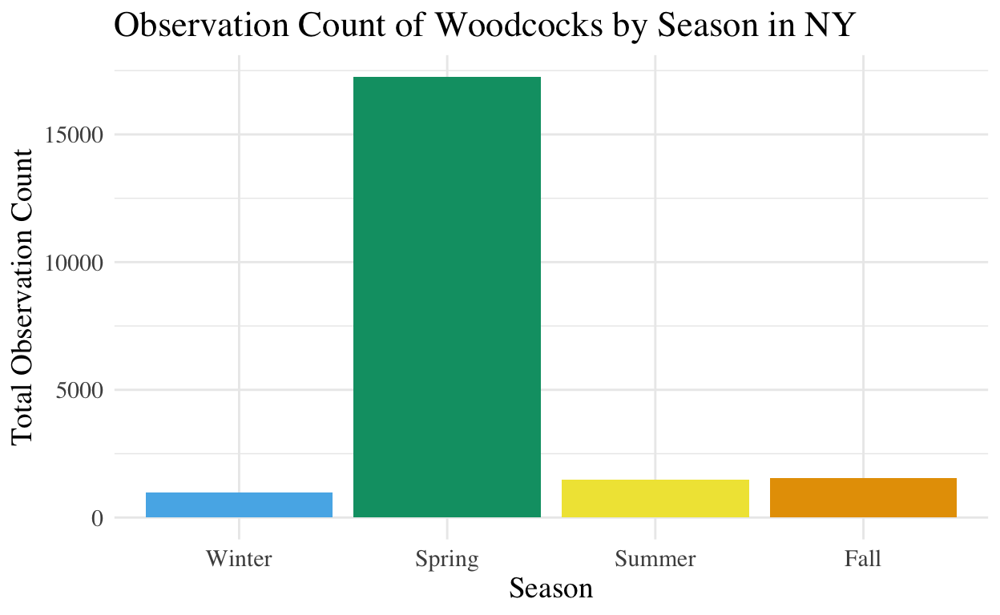
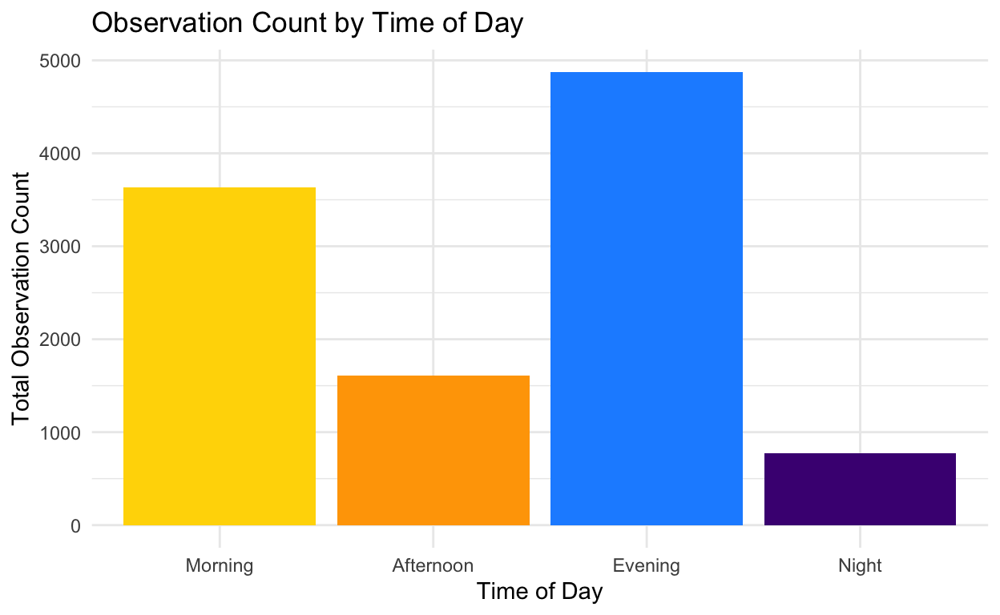
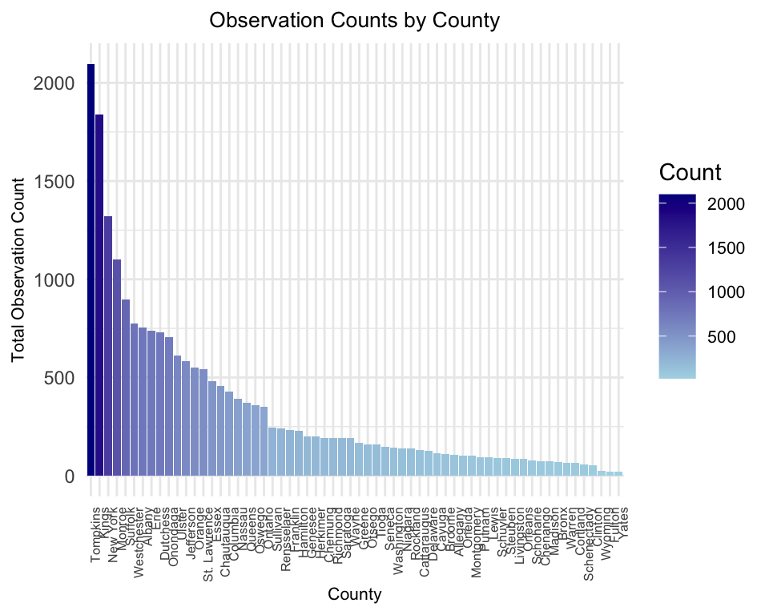

Does the season affect the activity of woodcocks?
# Define colors for the seasons
season_colors <- c(
"Winter" = "#56B4E9",
"Spring" = "#009E73",
"Summer" = "#F0E442",
"Fall" = "#E69F00"
)
# Function to assign colors based on seasons
season_color <- function(season) {
unname(season_colors[as.character(season)]) # Use color specific to the season
}
# Render the interactive map
leaflet(data = observations_selected) %>%
addTiles() %>% # Add default OpenStreetMap tiles
addCircleMarkers(
~longitude, ~latitude, # Longitude and Latitude
radius = 3, # Marker size
fillColor = ~season_color(season), # Apply season colors
color = "grey", # Grey outline for all markers
fillOpacity = 0.6, # Set fill opacity for transparency
stroke = TRUE, # Add borders to markers
weight = 0.5, # Border thickness
popup = ~paste("Season:", season, "<br>",
"Observation Count:", observation_count, "<br>",
"Time:", substr(time_observations_started, 1, 5), "<br>", # Extract HH:MM
"Date:", observation_date) # Add popup information
) %>%
addLegend(
position = "bottomright",
colors = unname(season_colors), # Colors for the legend
labels = names(season_colors), # Labels for the seasons
title = "Season",
opacity = 1
)observations_selected <- observations_selected |>
mutate(season = factor(season, levels = c("Winter", "Spring", "Summer", "Fall")))
season_summary <- observations_selected |>
group_by(season) |>
summarise(total_observation_count = sum(observation_count, na.rm = TRUE))
ggplot(season_summary, aes(x = season, y = total_observation_count, fill = season)) +
geom_bar(stat = "identity") +
scale_fill_manual(values = c("Winter" = "#56B4E9",
"Spring" = "#009E73",
"Summer" = "#F0E442",
"Fall" = "#E69F00")) +
labs(
title = "Observation Count of Woodcocks by Season in NY",
x = "Season",
y = "Total Observation Count"
) +
theme_minimal() +
theme(legend.position = "none",
text = element_text(family = "Times", size = 14))
The total observation count in Spring in NY is significantly higher than in any other season.
observations_selected <- observations_selected |>
mutate(season = factor(season, levels = c("Winter", "Spring", "Summer", "Fall")))
season_summary <- observations_selected |>
group_by(season) |>
summarise(total_observation_count = sum(observation_count, na.rm = TRUE))
# Create a table using kable for display
season_summary |>
kable(
col.names = c("Season", "Total Observation Count"),
caption = "Table: Total observation count of woodcocks by season in NY"
)| Season | Total Observation Count |
|---|---|
| Winter | 965 |
| Spring | 17248 |
| Summer | 1472 |
| Fall | 1531 |
When do American woodcocks usually appear?
# map
# Define colors for the times of day
time_colors <- c(
"Morning" = "#FFD700", # Gold for Morning
"Afternoon" = "#FFA500", # Orange for Afternoon
"Evening" = "#1E90FF", # Dodger Blue for Evening
"Night" = "#4B0082" # Indigo for Night
)
# Function to assign colors based on time of day
time_color <- function(time_of_day) {
unname(time_colors[as.character(time_of_day)]) # Use color specific to the time of day
}
# Render the interactive map
leaflet(data = observations_selected) %>%
addTiles() %>% # Add default OpenStreetMap tiles
addCircleMarkers(
~longitude, ~latitude, # Longitude and Latitude
radius = 3, # Marker size
fillColor = ~time_color(time_of_day), # Apply time of day colors
color = "grey", # Grey outline for all markers
fillOpacity = 0.6, # Set fill opacity for transparency
stroke = TRUE, # Add borders to markers
weight = 0.5, # Border thickness
popup = ~paste("Time of Day:", time_of_day, "<br>",
"Observation Count:", observation_count, "<br>",
"Time:", substr(time_observations_started, 1, 5), "<br>", # Extract HH:MM
"Date:", observation_date) # Add popup information
) %>%
addLegend(
position = "bottomright",
colors = unname(time_colors), # Colors for the legend
labels = names(time_colors), # Labels for the times of day
title = "Time of Day",
opacity = 1
)observations_selected <- observations_selected |>
mutate(time_of_day = factor(time_of_day, levels = c("Morning", "Afternoon", "Evening", "Night")))
# Summarize observation counts by time of day
time_summary <- observations_selected |>
group_by(time_of_day) |>
summarise(total_observation_count = n())
# Create the plot
ggplot(time_summary, aes(x = time_of_day, y = total_observation_count, fill = time_of_day)) +
geom_bar(stat = "identity") +
scale_fill_manual(values = c(
"Morning" = "#FFD700",
"Afternoon" = "#FFA500",
"Evening" = "#1E90FF",
"Night" = "#4B0082"
)) +
labs(
title = "Observation Count by Time of Day",
x = "Time of Day",
y = "Total Observation Count"
) +
theme_minimal() +
theme(legend.position = "none")
The total observation count in Morning…..
# table
# Ensure 'time_of_day' is a factor with a specific order
observations_selected <- observations_selected |>
mutate(time_of_day = factor(time_of_day, levels = c("Morning", "Afternoon", "Evening", "Night")))
# Summarize total observation count by time of day
time_summary <- observations_selected |>
group_by(time_of_day) |>
summarise(total_observation_count = sum(observation_count, na.rm = TRUE))
# Create a table using kable for display
time_summary |>
kable(
col.names = c("Time of Day", "Total Observation Count"),
caption = "Table: Total observation count of woodcocks by time of day in NY"
)| Time of Day | Total Observation Count |
|---|---|
| Morning | 5465 |
| Afternoon | 2375 |
| Evening | 11959 |
| Night | 1417 |
Are the difference significant?
kruskal_test <- kruskal.test(observation_count ~ time_of_day, data = observations_selected)
# Extract test results
kruskal_result <- data.frame(
Statistic = round(kruskal_test$statistic, 3),
Degrees_of_Freedom = kruskal_test$parameter,
P_Value = format.pval(kruskal_test$p.value, digits = 3, scientific = TRUE)
)
# Save results as a nice table
kruskal_result |>
kbl(caption = "Kruskal-Wallis Test Results") |>
kable_classic(full_width = FALSE, html_font = "Times")| Statistic | Degrees_of_Freedom | P_Value | |
|---|---|---|---|
| Kruskal-Wallis chi-squared | 1298.153 | 3 | <2e-16 |
There is strong evidence that the observation counts differ significantly across the time periods (Morning, Afternoon, Evening, Night).
Observation Counts by County
# Summarize the data by county
county_summary <- observations_selected |>
filter(!is.na(county)) |>
group_by(county) |>
summarise(total_observation_count = sum(observation_count, na.rm = TRUE))
# Create a bar plot
ggplot(county_summary, aes(x = reorder(county, -total_observation_count), y = total_observation_count, fill = total_observation_count)) +
geom_bar(stat = "identity") +
scale_fill_gradient(low = "lightblue", high = "darkblue", name = "Count") +
labs(
title = "Observation Counts by County",
x = "County",
y = "Total Observation Count"
) +
theme_minimal() +
theme(axis.text.x = element_text(angle = 90, hjust = 1, size = 6),
legend.position = "right",
plot.title = element_text(size = 10, hjust = 0.5), # Smaller title, centered
axis.title.x = element_text(size = 8),
axis.title.y = element_text(size = 8),
legend.text = element_text(size = 8))